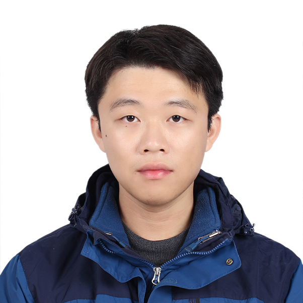

|  | Senior student |
I am now a senior student from Xidian University, School of Artificial Intelligence. I am hard-working, enterprising, industrious, easy-going and ready to cooperate. I am now looking forward to pursuing a further academic career starting in 2023 fall.
B.E. in Artificial Intelligence, Xidian University (Sept. 2019 ~ Now)
|
CET-4: 628
CET-6: 661
TOEFL: 111 [PDF]
GRE: 332 + 4.0 [PDF]
Research Project
StyleGAN-based Scientific Visualization (Jun. 2022 ~ Now)
Advisor: Chaoli Wang
--Professor of Computer Science and Engineering, University of Notre Dame
Internship Project
Intelligent Synthesis of Colorful Architectural Plans (Aug. 2022 ~ Oct. 2022)
Company: Vanyi Tech (Subsidiary to Vanke Co., Ltd.)
Location: Science and Technology Park, Nanshan District, Shenzhen, Guangdong Province, China
Competition Project
LSTMIS-based Quantitative Portfolio Investment Model
Course Projects
EDSR-based Super Resolution
Implement super resolution task based on EDSR on BSDS500 dataset.
Image Segmentation based on Unet
Implement semantic segmentation based on Unet on MSRC-v2 dataset.